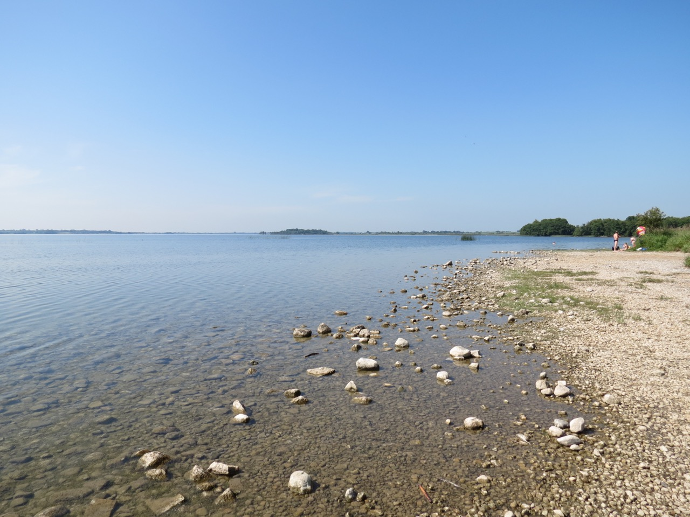
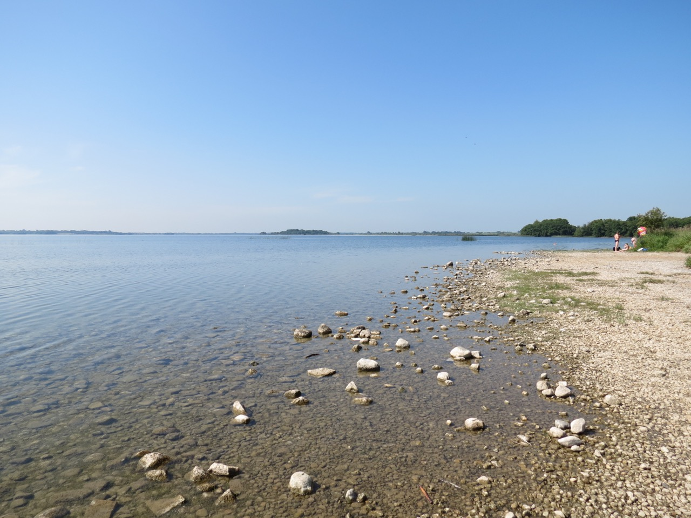

Situated in the heart of picturesque Westmeath - the 'Lake County' - Lough Ennell is one of the biggest tourism draws in the midlands; a haven for anglers, swimmers, hikers, birdwatchers, campers, sailors, and vacationers of all varieties. The lake is surrounded by many vestiges of local history including Belvedere House, Gardens, and Park, including its forge and stables; St Nicholas's Church, Moyliscar; Tudenham Park, and much more.
Geography
The lake itself is approximately 7km long by 3km wide and is noted for being quite shallow which allows for some great fishing. The 79km River Brosna flows into Lough Ennell from the east side of the lake, and exits in an area called Lilliput on the west side. The lake is glacial and formed appoximately 20,000 years ago following the last ice age.History & Culture
The lake was originally known as Loch Ainninn before this became anglicised to Lough Inill. Legend says that some of the earliest settlers in Ireland, the Fir Bolg, laid claim to this another lake in the area, Lough Owel, and named them after two princes in the Fir Bolg, Ainninn and Vair. When local lords, the Rochforts, built Belvedere House on the north-east shore in 1740, they tried to rename the lake to Lake Belvedere but were unsuccessful in their endeavours. Novelist Jonathan Swift had a holiday home on the lakeshore and it is said that as he sailed and looked back at the size of the people on the shore, he was inspired to write Gulliver's Travels, his most notable work.Recreation
Lough Ennell allows for a range of different activities for tourists and locals alike, the most popular of which is angling which attracts anglers from across the country. Lough Ennell has the prestige of producing Ireland's largest lake brown trout at 11.8kg. The fishing season runs from the beginning of March to mid-October and the lake also produces perch and pike. The lake has a caravan and camping park and boat hire facilities, and is close to Bloomfield House Hotel and Mullingar Golf Club. On the western shore of the Lough Ennell is the Lilliput Adventure Centre which offers activities such as hill walking, rock climbing, canoeing and kayaking, orienteering, archery, abseiling, and more. The centre also provides comfortable accomodation for up to forty guests. Group bookings can be made with special rates for summer camps, school tours, and hen and stag parties. Lough Ennell is also just ten kilometres from Mullingar, a hub of music, restaurants, and heritage in the midlands.Contact
For further information on Lough Ennell, Mullingar, Belvedere, Westmeath, or the midlands in general you can contact the Mullingar Tourist Office located in the Market Square, Mullingar on 044-9348650, email mullingar@failteireland.ie, or visit discoverireland.ie.